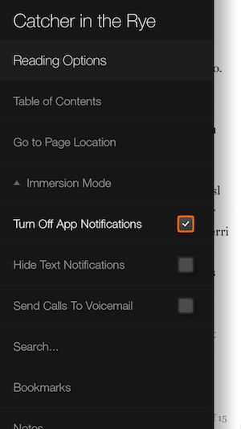

During my first month as an Amazon intern, I did a lot of technical reading — and I mean a lot. As I finished each book and placed it into my suitcase, I realized that the weight was going to be an issue when I needed to fly back home. The logical decision was to buy an e-reader.
But for me it wasn't as easy as adding the Kindle Paperwhite to my Amazon cart and clicking purchase. I added and removed that thing at least 8 or 9 different times. I felt uncomfortable abandoning the physical world of books. I loved the smell, the feel, and most of all, the disconnect from a totally connected world.
But after a month, I accumulated a stack of 8 thick books and finally I pulled the trigger on the Paperwhite. I realized that the prolonged purchase process was seriously uncomfortable, and wondered why the e-reader was so hard for me to adopt. After some research, I found I wasn't alone. People felt that they:
Really liked the feeling of a physical book
Didn't want to be distracted
Had less of a sense of depth or progress in the book
That Monday I went in a bit early and had some time before scrum to play around with the Fire Phone I used for development. I opened the reading app and noticed that it wasn't really utilizing "Dynamic Perspective;" the phrase used to describe the 3D visual effects the Fire Phone was known for. I found it weird, and was interested in seeing what could be done to make the reading experience better with the use of it.
The following morning I asked my manager if I could present an idea I had to the team. He agreed. I explained that I wanted to create a reading experience for the Fire Phone that would help alleviate the issues I found with e-readers to improve the e-reading experience, and consequently, sales.
Following the meeting, I sat down with my manager, and we outlined a direction for the prototyping effort, but more importantly, we made sure the prototype answered questions. The common phrase was, "What question will the prototype answer?" (This is something I didn't entirely understand until further down the road) I then set up a number of one on one meetings with my teammates to flesh out interactions and exchange ideas.
Immersive Reader v1
With all of this knowledge gained, I began implementing the first prototype in Android. I created an app that used Amazon's design language and API's to basically emulate the existing reader app, with a pull out panel that allowed the user to cut down distractions.

As you can tell, the goal was to make it easy to quickly filter your level of immersion, without leaving the reading experience. This definitely addressed the first problem I wanted to solve, but how about conveying a feeling of depth/progress, and what about that physical feeling of a book?
In order to help show the reader how much of the book they had left, or had already read, I utilized the Fire Phone's ability to gather head tracking data. I did this by sensing when the user tilted their phone left or right, and at a certain point, the pages on the side of the book that the user was tilting the phone would start to fan out. In terms of the tilt interaction, hold your phone like you're reading something, and move your wrist toward you like you're doing a wrist curl, and then away. This is what I mean by "tilting." It looked like this when the pages were fully fanned out.
So in the above image, as the user tilted their phone away from them (opposite of a wrist curl), they'd be peaking at how many pages they had left in the book, and get that missing sense of depth.
After a lot of user testing around the office by both designers and developers, I found that the interaction was too precise. In addition, a lot of false positives were being generated from small changes in the readers head location — not ideal for reading on the move, or stationary.
Immersive Reader v2
In the second iteration, I refined the use of head tracking to make the interaction less error prone and more manageable for those on the move. I also addressed the uncomfortable feeling when you navigate away from your current page (often done to reference a prior bookmarked page). The goal was to make it easy and reduce the amount of chrome used to navigate between pages that you had bookmarked — something I often did when I was reading heavily technical books.
The dark slivers were the initial representation of pages you'd bookmarked, and tapping one of them would shoot you to that page. It proved to be a very immersive way to navigate through different areas in a book without dealing with menus and chrome that take you out of the reading experience.
After further user testing around the office, I found that the head tracking implementation just wasn't practical for real world use. Users would have to tilt their phone, which would then begin to show pages fanning outward, and only then could they access the pages they bookmarked. It was a cool idea, but it was much too finicky and uncomfortable. The bookmarking idea was a good start, but needed more work.
Immersive Reader v3
In the third iteration, I took a new approach and stopped using head tracking. Instead, I inserted a bookmark icon centered in the bottom of the app. It looked like this.
The user could "grab" and drag the icon in the left or right direction, and the pages fanned accordingly. This mentally made sense, and also gave the user much more control. When the user dragged to a certain point on either side, the pages would eventually stop fanning and "lock" into place, at which point selecting bookmarks would be easy.
The reason the button was placed in the bottom center was because of the look of the existing Kindle reader. All touch interactions on the "page" would be intercepted by the ViewPager (Android class), so placing the button at the bottom where the page number is currently presented would allow for touch interactions, and also felt easy to access with one hand (thumb).
After doing another round of testing, I found that users liked the new sense of control over the interaction, but I had to teach it to them. The bookmark icon didn't afford a dragging interaction. It told the user "tap me" instead of "drag me left or right." Users felt that the locking bookmarks made selection much easier and less error prone. But a few questions arose. What happens if the user has a ton of bookmarks? What if the book they're reading is massive?
Immersive Reader v4
This final iteration was a ton of fun. I never thought I'd go through so many versions an icon that I initially thought to be so simple. I also introduced more realistic bookmarks, that upon locking into place, would animate out.
To address issues of larger quantities of bookmarks and pages, I decided that grouping them into chapters was a logical decision, but more importantly, it made sense for anyone who has read a book. Further, I felt that this grouping actually made the navigation to different pages in the book more effective than in a physical book.
After tapping one of the bookmark tabs, you would then see a modal in which you could scroll through your bookmarks from that chapter. Upon tapping a bookmark in the list, you would be instantly brought to that page.
You can also see the icon at the bottom is orange to identify to the reader that the "bookmark selection view" has been initialized and the pages are locked into place until a selection has been made or the user taps elsewhere.
A final round of user testing showed a lot of positive results. The icon afforded grabbing and dragging left or right to users. Users also found the bookmark selection was simple and easy. In a future iteration (if you look at the image I actually started to do this) I would have loved to extend this bookmarking to notes and highlights as well — both of which are core pieces of the reading experience on Kindle devices.
Final Product
The End
This project was the one that really stuck with me months after I left Seattle. It opened my eyes to how cool investigating, implementing, and solving a problem can be. Even more so, it made me realize how fun prototyping is and left me wondering why I hadn't been doing it all along. I truly had a blast with this one.